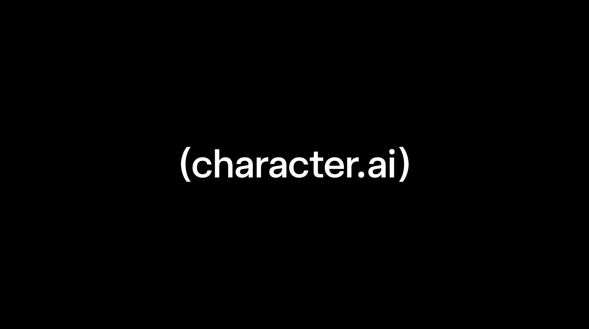

Character.AI: an update on Character.AI (Chapter 11)
title: "Character.AI: an update on Character.AI (Chapter 11)" source: https://blog.character.ai/an-update-on-character-ai/ author: unknown date: unknown models: [character-ai] tags: [official] mirrored: 2026-10-22 note: mirrored against link rot by the Pantheon; all rights with the original author
Oct 12, 2026 2 min read
An Update on Character.ai

Today, we’re sharing that Character.ai has initiated a voluntary Chapter 11 bankruptcy process to facilitate a court-supervised sale of the company.
Over the past year, we’ve taken meaningful steps to sustain and improve our business amid significant legal, regulatory, and operational headwinds. After a comprehensive review of our available alternatives, our board determined that this court-supervised sale process provides us with the best opportunity to maximize value for all of our stakeholders.
We hope that the sale process will yield an actionable proposal that will allow continued operations of the Character.ai platform. If such a bid is unavailable, however, the platform will be wound down.
As we navigate this process, maintaining a safe and engaging experience for our community remains a top priority.
What This Means for Our Community
The Character.ai platform remains up and running, and you can continue to access all services at this time.
We know that this news may raise questions for some of you. To learn more, please see our FAQs below. And if you need support, you can find helpful resources here.
1. Why did Character.ai file for Chapter 11?
Over the past year, we have taken meaningful steps to sustain and improve our business amid significant legal, regulatory, and operational headwinds.
After a comprehensive review of available options, we determined the best path forward was to begin a Chapter 11 case to pursue a court-supervised sale of all or substantially all of our assets. We believe that this court-supervised process both maximizes the value of our business and provides the best opportunity for continued service to our platform users.
2. How long is the sale process expected to take?
We currently expect that the court-supervised sale process will be complete by the end of November or perhaps early December 2026.
3. What does this mean for users?
The Character.ai platform remains up and running, and you can continue to access all services at this time. We're focused on finding the best path forward for our platform and community.
4. Is my paid subscription still active?
Yes, your subscriptions remain active, and billing is unchanged for now. If the service changes in a way that affects paid features, we intend to notify subscribers in advance.
5. What happens to user data and chats?
Your information continues to be protected under our Privacy Policy, and our data privacy and security practices are unchanged. As a reminder, you can delete your account or export your data through the app or the Character.ai website.
Additional Case Information
To learn more, you can read the full press release HERE. Court filings and additional information relating to Character.ai’s Chapter 11 case can be found HERE, a website administered by Character.ai’s claims and noticing agent, Stretto, Inc.
On October 15, 2026, Character.ai filed the Notice of Commencement of its Chapter 11 case, which includes information about the meeting of creditors under section 341 of the Bankruptcy Code. The notice can be found HERE.